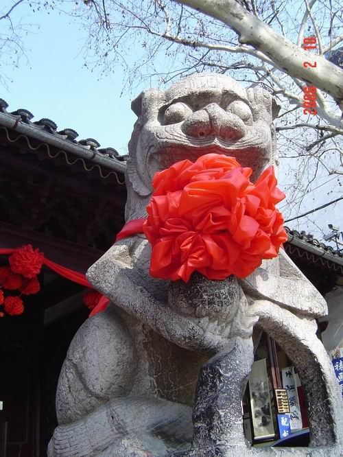
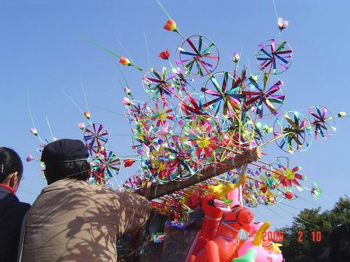
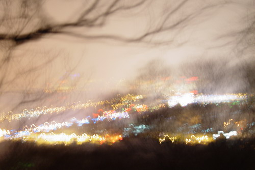
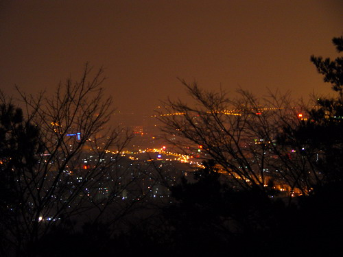
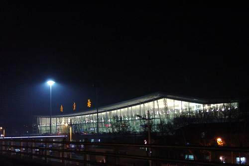
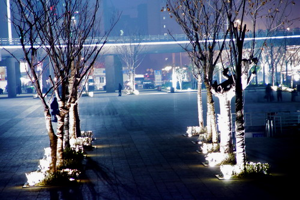
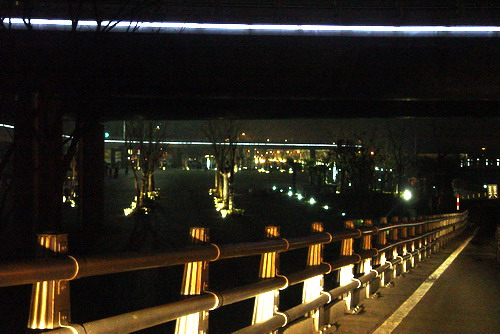
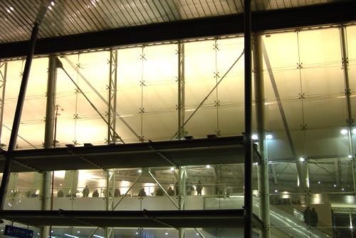
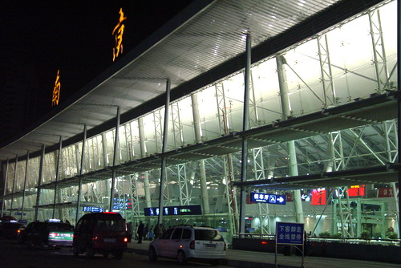

奶茶？ @ Feb 14, 2006
高山乌龙茶和咖啡奶在一起...什么味道？
高山乌龙茶和咖啡奶在一起...什么味道？
不知道南京人是不是特别看中元宵节？因为春节没有过好，元宵节盼着和父母吃顿象样的团聚饭。车送到4S店修理保养，打算步行去父母家，据说每天步行30分钟可延长3年寿命，活着图个质量，至于能活多长时间...60岁以后听天由命吧！
元宵节的今天阳光明媚，最高温度达到17度，早晚温差在12度左右，早些时候的夜晚便依稀呼吸到春天熟悉的气息了......心情随之渐渐雀跃，正在进入一年中美好而短暂的季节！





shot by Mark
SONY DSC-P10
（摘节）不要把时间浪费在别人的生活里。不要被条条框框束缚，否则你就生活在他人思考的结果里。不要让他人的观点所发出的噪音淹没你内心的声音。最为重要的是，要有遵从你的内心和直觉的勇气，它们可能已知道你其实想成为一个什么样的人。其他事物都是次要的。
对于病人来说，良药总是苦口。生活有时候就像一块板砖拍向你的脑袋，但不要丧失信心。你得找出你的最爱，对工作如此，对爱人亦是如此。
人赤条条地来，赤条条地走，没有理由不听从你内心的呼唤。
公司给职工补助每年4000元的交通费，咔咔~~偶对公司的感情又加深了N个百分点。
同办公室的大姐春节从成都回来带了好些香辣小零食，甚是好吃。最近有一次我居然在自己的车厢里磕瓜子:roll:，想到小时侯父母常教育我们兄妹不要养成爱吃零食、爱串门的“坏”习惯。现在我却不这么认为，在适当场合吃点零食，挺不错的:wink:，有时边吃脑子里还会冒出“真好”的感叹句！
谈到“吃”，必然想到“吃相”，想起最近听好些女子抱怨：“现在，优秀的女人一大把，优秀的男人就一小搓，这一小搓里好些又是结婚了的。”我想说的是大多女人吃相都比较优雅，好些男人吃相却实在丑陋。这和他们天生粗线条的神经有关吗？在南京这个离婚与结婚比率为1：6的城市里，但愿粗线条男人与粗线条女人相爱，细腻的和细腻的交往，世界会和谐许多！昨天看到一篇《女性嫁人前要背诵的古训》：
A、嫁有钱的还是没钱的？
嫁愿意为你花钱的。有句话说得好：看一个人够不够爱你，，不是看他为你付出多少，而是看他拥有多少却肯为你付出多少；
B、嫁事业型还是家庭型的？
笼统而言：家庭型的；
C、嫁什么性格的人？
嫁人嫁的是性格，其他一切都会离你远去，相似的性格好过互补的性格。
D、花心男人嫁不嫁？
男人是多偶制动物，没有不“花心”的男人，但有“自制力”的男人。有句话说，99%的猫都叫咪咪，99%的男人都好色。剩下那一个可能是个假正经。一个花心好男人会是有贼心没贼胆。爱美非罪过，好色没有错，只要挡得住诱惑，有责任心。
E、什么样的男人是大忌？什么样的男人是大善？
自私的男人是大忌，有责任感的男人是大善。

今天上午10点南京音乐台105.8直播 ”第48届格莱美音乐颁奖盛典”，准备用手机收听咯。
格莱美音乐奖，全称是年度格莱美音乐大奖，由于美国录音艺术及科学协会主办，是美国三大流行音乐奖项之一，另两项为美国音乐奖和MTV大奖。它是世界流行音乐界公认的最具影响的音乐大奖,1959年举办了第一届颁奖典礼，此后每年举办一届.
第48届格莱美奖颁奖盛典在美国“天使之城”洛杉矶的斯台普斯中心举行。北京音乐广播的转播小组将于北京时间2月9日10点至12点通过FM97.4和全国卫星音乐广播协作网共17家音乐电台在全国同步直播这一盛典。北京音乐台转播小组将于2月5日抵达骆杉矶，2月6日、2月7日为格莱美彩排时间，主持人会进行采访和报道。
更多详细内容:http://www.grammy.com/
在star wars之前，用纸巾捏死一只小小强，新年不想杀生，bt它呆在电脑键盘边上碍眼哦！什么是star wars？在你的电脑开始菜单运行栏里键入telnet towel.blinkenlights.nl，有趣...has no life in hardware…
有段时间在早晨上班的路上喜欢收听104.3的“美文看世界”，自从这个节目在年前消失后，至今没有发现什么好的新闻节目。晚上的广播更是千篇一律，不是性健康推销药品，就是不停的播放音乐歌曲，再不就是你侬我伤的情感诉说，想听听新闻集锦现在变得那么难。广播节目取向变化是没有好的主持人和编辑吗？如今广播节目和央视春晚小品大多有哗众取宠之势？
@南京百家湖


其实，我一直都在，只是最近不知道可以写下些什么？
这个春节过得索然无味，一切都停顿在某个点上，既不能轻易跨越又无法解脱，我们不知道自己要什么，但应该清楚自己不要什么吧，新年以这样的逻辑开始尚不算进步。大多数人为面子而活，望着屋顶上昨日的积雪，想到妈妈说的那句：“家宽不如心宽。”
上班前一天南京下大雪，在百家湖遇上春节最美丽的烟花，总算嗅到些许节日的气息。新年工作的第一天，早晨5点醒来，昏昏沉沉怎么也睡不着，7点半起来洗漱，时间很充裕的在8：35分的打卡机上按下指纹。办公桌上的那支水竹在8天长假之后出乎意料的仍然洋溢着旺盛的生命力，令人喜出望外。办公室格外温暖，没有寒暄没有频繁的互道“新年好”，新年的工作按部就班一如节前的摸样。想想这之后的日子怎么度过？大脑一片空白...... 已无昔日过节喜悦，更不敢有什么太多生活计划，当太多一个人的时候，还是工作的好。这个春节有些怀念2003年的春节，一个人去云南旅行，蓝天、暖阳、明媚的心情，随时随地在小本子上记录点什么，挺享受的。很想再做一个这样的旅行计划，但新年似乎繁杂的事情多起来，从时间和经济上考虑，能去哪里呢？！真的厌倦了城市的氛围，还有这城市的表情，也厌倦了对人的期待！
中午去金鹰，看到商场镜子里的自己，觉得好土啊。回到办公室和好朋友们讲到这件事，她们一致赞同在家照镜子觉得蛮不错的，可到了商场就怕看到镜子里的自己。完全是天壤之别的感受！难道不同地方的镜子会照出不同的效果？哪个更为真实呢？
还有两三天就过年了，发现最近很多人的脾气很急噪，急着过年吗？年前大多数人不想继续工作，怎么可能有耐心听电话里的人罗嗦？工厂那边的操作小姐讲话也象吃了子弹似的......我不愿意过年，因为不知道过年会不会快乐？快乐情绪非常重要，你的内分泌你的心理和生理的健康都会受到“快乐”的很大影响！
@紫金山顶


@南京火车站




